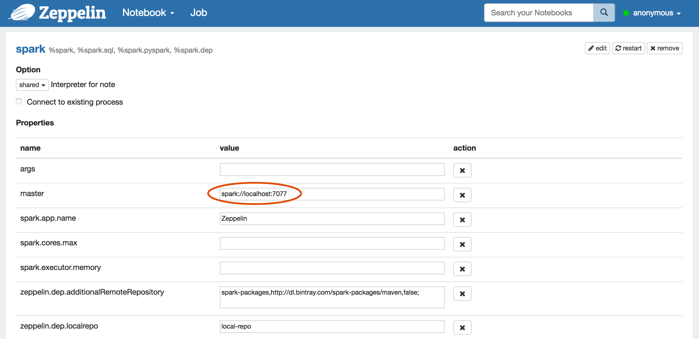
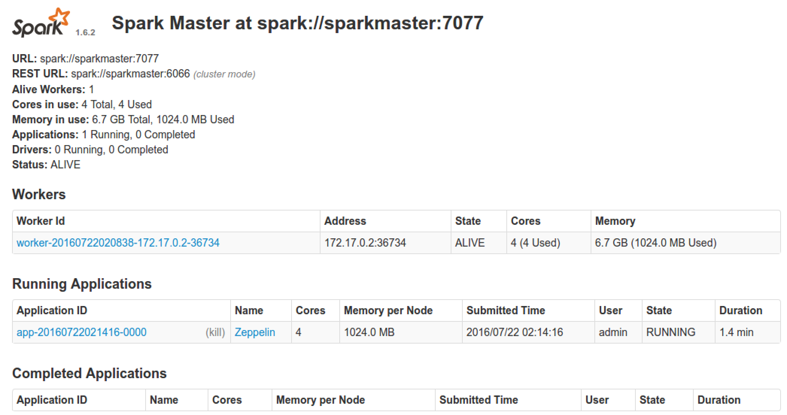
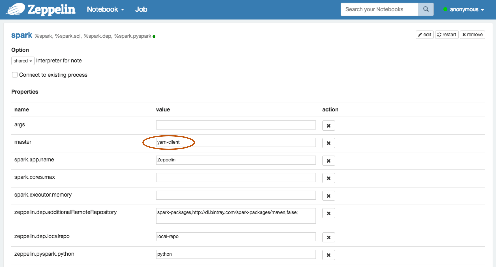
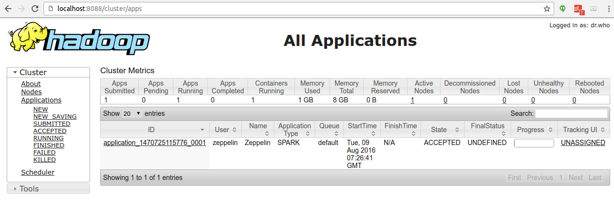
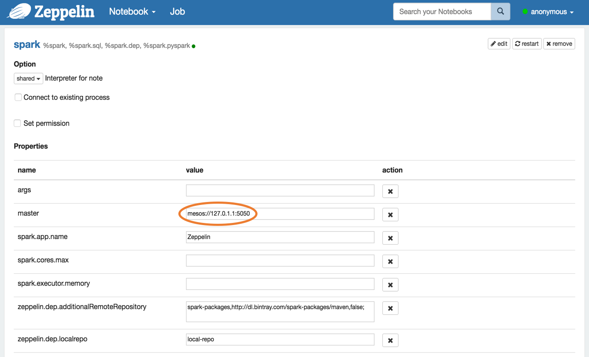
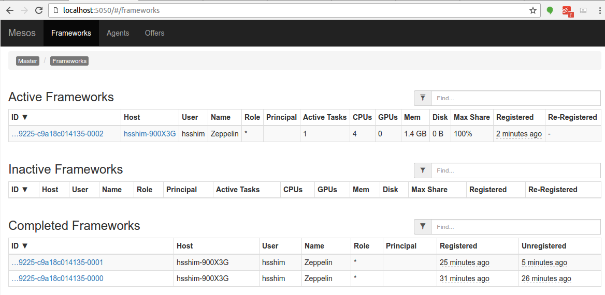

Apache Zeppelin on Spark Cluster Mode
Overview
Apache Spark has supported three cluster manager types(Standalone, Apache Mesos and Hadoop YARN) so far. This document will guide you how you can build and configure the environment on 3 types of Spark cluster manager with Apache Zeppelin using Docker scripts. So install docker on the machine first.
Spark standalone mode
Spark standalone is a simple cluster manager included with Spark that makes it easy to set up a cluster. You can simply set up Spark standalone environment with below steps.
Note : Since Apache Zeppelin and Spark use same
8080port for their web UI, you might need to changezeppelin.server.portinconf/zeppelin-site.xml.
1. Build Docker file
You can find docker script files under scripts/docker/spark-cluster-managers.
cd $ZEPPELIN_HOME/scripts/docker/spark-cluster-managers/spark_standalone
docker build -t "spark_standalone" .
2. Run docker
docker run -it \
-p 8080:8080 \
-p 7077:7077 \
-p 8888:8888 \
-p 8081:8081 \
-h sparkmaster \
--name spark_standalone \
spark_standalone bash;
Note that sparkmaster hostname used here to run docker container should be defined in your /etc/hosts.
3. Configure Spark interpreter in Zeppelin
Set Spark master as spark://<hostname>:7077 in Zeppelin Interpreters setting page.

4. Run Zeppelin with Spark interpreter
After running single paragraph with Spark interpreter in Zeppelin, browse https://<hostname>:8080 and check whether Spark cluster is running well or not.

You can also simply verify that Spark is running well in Docker with below command.
ps -ef | grep spark
Spark on YARN mode
You can simply set up Spark on YARN docker environment with below steps.
Note : Since Apache Zeppelin and Spark use same
8080port for their web UI, you might need to changezeppelin.server.portinconf/zeppelin-site.xml.
1. Build Docker file
You can find docker script files under scripts/docker/spark-cluster-managers.
cd $ZEPPELIN_HOME/scripts/docker/spark-cluster-managers/spark_yarn_cluster
docker build -t "spark_yarn" .
2. Run docker
docker run -it \
-p 5000:5000 \
-p 9000:9000 \
-p 9001:9001 \
-p 8088:8088 \
-p 8042:8042 \
-p 8030:8030 \
-p 8031:8031 \
-p 8032:8032 \
-p 8033:8033 \
-p 8080:8080 \
-p 7077:7077 \
-p 8888:8888 \
-p 8081:8081 \
-p 50010:50010 \
-p 50075:50075 \
-p 50020:50020 \
-p 50070:50070 \
--name spark_yarn \
-h sparkmaster \
spark_yarn bash;
Note that sparkmaster hostname used here to run docker container should be defined in your /etc/hosts.
3. Verify running Spark on YARN.
You can simply verify the processes of Spark and YARN are running well in Docker with below command.
ps -ef
You can also check each application web UI for HDFS on http://<hostname>:50070/, YARN on http://<hostname>:8088/cluster and Spark on http://<hostname>:8080/.
4. Configure Spark interpreter in Zeppelin
Set following configurations to conf/zeppelin-env.sh.
export MASTER=yarn-client
export HADOOP_CONF_DIR=[your_hadoop_conf_path]
export SPARK_HOME=[your_spark_home_path]
HADOOP_CONF_DIR(Hadoop configuration path) is defined in /scripts/docker/spark-cluster-managers/spark_yarn_cluster/hdfs_conf.
Don't forget to set Spark master as yarn-client in Zeppelin Interpreters setting page like below.

5. Run Zeppelin with Spark interpreter
After running a single paragraph with Spark interpreter in Zeppelin, browse http://<hostname>:8088/cluster/apps and check Zeppelin application is running well or not.

Spark on Mesos mode
You can simply set up Spark on Mesos docker environment with below steps.
1. Build Docker file
cd $ZEPPELIN_HOME/scripts/docker/spark-cluster-managers/spark_mesos
docker build -t "spark_mesos" .
2. Run docker
docker run --net=host -it \
-p 8080:8080 \
-p 7077:7077 \
-p 8888:8888 \
-p 8081:8081 \
-p 8082:8082 \
-p 5050:5050 \
-p 5051:5051 \
-p 4040:4040 \
-h sparkmaster \
--name spark_mesos \
spark_mesos bash;
Note that sparkmaster hostname used here to run docker container should be defined in your /etc/hosts.
3. Verify running Spark on Mesos.
You can simply verify the processes of Spark and Mesos are running well in Docker with below command.
ps -ef
You can also check each application web UI for Mesos on http://<hostname>:5050/cluster and Spark on http://<hostname>:8080/.
4. Configure Spark interpreter in Zeppelin
export MASTER=mesos://127.0.1.1:5050
export MESOS_NATIVE_JAVA_LIBRARY=[PATH OF libmesos.so]
export SPARK_HOME=[PATH OF SPARK HOME]
Don't forget to set Spark master as mesos://127.0.1.1:5050 in Zeppelin Interpreters setting page like below.

5. Run Zeppelin with Spark interpreter
After running a single paragraph with Spark interpreter in Zeppelin, browse http://<hostname>:5050/#/frameworks and check Zeppelin application is running well or not.

Troubleshooting for Spark on Mesos
- If you have problem with hostname, use
--add-hostoption when executingdockerrun
## use `--add-host=moby:127.0.0.1` option to resolve
## since docker container couldn't resolve `moby`
: java.net.UnknownHostException: moby: moby: Name or service not known
at java.net.InetAddress.getLocalHost(InetAddress.java:1496)
at org.apache.spark.util.Utils$.findLocalInetAddress(Utils.scala:789)
at org.apache.spark.util.Utils$.org$apache$spark$util$Utils$$localIpAddress$lzycompute(Utils.scala:782)
at org.apache.spark.util.Utils$.org$apache$spark$util$Utils$$localIpAddress(Utils.scala:782)
- If you have problem with mesos master, try
mesos://127.0.0.1instead ofmesos://127.0.1.1
I0103 20:17:22.329269 340 sched.cpp:330] New master detected at master@127.0.1.1:5050
I0103 20:17:22.330749 340 sched.cpp:341] No credentials provided. Attempting to register without authentication
W0103 20:17:22.333531 340 sched.cpp:736] Ignoring framework registered message because it was sentfrom 'master@127.0.0.1:5050' instead of the leading master 'master@127.0.1.1:5050'
W0103 20:17:24.040252 339 sched.cpp:736] Ignoring framework registered message because it was sentfrom 'master@127.0.0.1:5050' instead of the leading master 'master@127.0.1.1:5050'
W0103 20:17:26.150250 339 sched.cpp:736] Ignoring framework registered message because it was sentfrom 'master@127.0.0.1:5050' instead of the leading master 'master@127.0.1.1:5050'
W0103 20:17:26.737604 339 sched.cpp:736] Ignoring framework registered message because it was sentfrom 'master@127.0.0.1:5050' instead of the leading master 'master@127.0.1.1:5050'
W0103 20:17:35.241714 336 sched.cpp:736] Ignoring framework registered message because it was sentfrom 'master@127.0.0.1:5050' instead of the leading master 'master@127.0.1.1:5050'